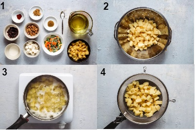
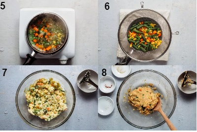
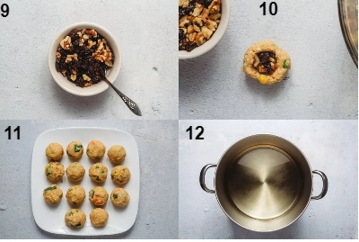
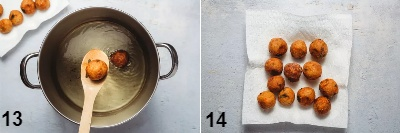
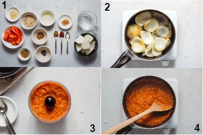
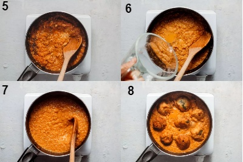

Malai kofta is a hugely popular dish on Indian restaurant menus all over the world.
It is a special occasion food probably because making it is a labor of love and takes time and effort.
Malai (meaning creamy in Hindi) kofta is the perfect vegetarian alternative to meatballs.
It goes very well with naan (tandoor-baked flatbread) or Jeera rice.
Method to prepare Malai Kofta
Make the Kofta
Gather the ingredients.Wash, peel, and dice the potatoes.
Boil them in a pot of water until fork tender.Drain and set aside.

Next, boil the veggies until crisp-tender.
Drain and set aside.In a large bowl, mash the boiled potatoes, mixed vegetables, paneer, and cream together.
Add the kofta spices - cumin, coriander, and red chili powder - to this mash and mix well. The resulting dough should be firm. If not add some more boiled potato. Season with salt.

In a small bowl, combine the chopped nuts and raisins.Make this dough into balls and put a 1/2 teaspoon of the nut and raisin mix in the center of each ball.
Roll into perfect rounds.In a large pot, heat the oil kept aside to fry the koftas, on a medium flame.

Deep fry these rounds till pale golden in color.
Drain on paper towels and keep aside.

Make the Paste
Gather the ingredients.Heat the 3 tablespoons of oil in a deep pan and fry the onions till light brown.
In a small food processor, place the fried onions, tomatoes, ginger, garlic, coriander, cumin, and red chili powder, and grind into a paste.
Put this paste back into the pan and fry till the oil begins to separate from the masala.

Add the poppy seeds powder and nut paste and fry for another 2 to 3 minutes.
Add 1 cup of warm water (the sauce for this dish is meant to be thick so do not add too much water) to this masala to form a gravy. Mix well. Season with salt.
Bring the gravy to a boil and then reduce the fire to a simmer.
Gently add the koftas to this gravy and cook uncovered for 2 to 3 minutes.

Turn off the fire and sprinkle the garam masala all over the top of the dish.
Cover immediately and allow to sit for 5 minutes.
Serve with hot naans (tandoor-baked leavened Indian flatbread) or jeera rice.